GS-TG：采用分块分组（Tile Grouping）的 3D Gaussian Splatting 加速器，在保持光栅化效率的同时减少冗余排序
论文针对 3D Gaussian Splatting（3D-GS）tile-based 渲染中 tile 尺寸的两难：大 tile 减少预处理与排序开销但增加冗余光栅化计算，小 tile 则相反，而现有工作仅凭经验选择 tile 尺寸。GS-TG 将 16×16 小 tile 完美嵌入 64×64 组，在组级别共享排序以消除冗余排序，同时为每个 Gaussian 生成 16-bit bitmask 标记其影响的小 tile，光栅化仍按小 tile 粒度进行，方法完全无损、无需重训练。为克服 GPU SIMT 架构无法并行执行 bitmask 生成与组级排序的限制，作者设计了含预处理模块（PM）、bitmask 生成模块（BGM）、组级排序模块（GSM）与光栅化模块（RM）的专用加速器，以 28nm CMOS 综合。实验显示几何平均加速 1.33 倍（最高 1.58 倍）、能效提升 2.12 倍（最高 2.97 倍），比 GSCore 最高快 1.54 倍；硬件面积 3.984 mm²、功耗 1.063 W、频率 1 GHz。该工作属于图形/神经渲染加速器方向，与团队内存与互连 IP 业务无直接关联。
3D-GS 的 tile-based 渲染中，排序与光栅化按 tile 独立执行，导致影响多个 tile 的 Gaussian 产生冗余排序与不必要的光栅化；tile 尺寸存在权衡——大 tile 降低预处理与排序开销但增加冗余光栅化计算，小 tile 相反——而此前工作仅凭渲染速度的经验观察选择 tile 尺寸，缺乏对该权衡的深入分析与解决方案。
提出 tile grouping 渲染方法 GS-TG：将小 tile（16×16）完美嵌入大组（64×64）以保证计算独立性，在组级别做 Gaussian 影响识别与排序以大幅减少冗余排序；同时为每个 Gaussian 生成 16-bit bitmask 标记组内受影响的小 tile，光栅化按小 tile 粒度、仅处理 bitmask 标记的 Gaussian（bitwise AND/OR 筛选），从而同时获得大 tile 的排序效率与小 tile 的光栅化效率；方法无损、无需重训练，兼容 AABB/OBB/Ellipse 边界。硬件上设计专用加速器，含预处理模块（PM）、bitmask 生成模块（BGM，4 个并行 tile check unit）、组级排序模块（GSM，16 个比较器）与光栅化模块（RM，16 个并行 RU），使 bitmask 生成与组排序并行执行；RTL 实现后用 Synopsys Design Compiler 以 28nm CMOS 综合，并用 Synopsys PrimeTime PX 仿真功耗。
相对 baseline（自研加速器上 Ellipse 边界的常规 3D-GS 渲染）几何平均加速 1.33 倍，高分辨率 residence 场景最高 1.58 倍
相对 GSCore 最高加速 1.54 倍（residence 场景）
几何平均能效提升 2.12 倍，高分辨率 Residence 场景最高 2.97 倍
硬件总面积 3.984 mm²，功耗 1.063 W，工作频率 1 GHz（28nm CMOS，DRAM 带宽设为 51.2 GB/s）
GPU 实验中 16×16 tile + 64×64 group 组合在多数场景最快；GS-TG 为无损方法，无需重训练或微调，可与已有 3D-GS 优化技术叠加
与 GSCore、FlashGS 等仅通过更精确的 Gaussian 形状/边界（OBB、椭圆）减少 tile 识别与光栅化冗余不同，本文首次系统分析 tile 尺寸在预处理、排序、光栅化三阶段的权衡，并提出 tile grouping + bitmask 机制，使排序在大组粒度共享、光栅化保持小 tile 粒度，同时取得两者优势；且为完全无损、无需重训练的方法，可与已有 3D-GS 优化技术无缝集成。
相关度级别：low
命中能力域：无明显对应
理由：论文核心贡献是 3D-GS 渲染算法优化与图形渲染加速器微架构（tile grouping、bitmask、排序/光栅化流水线），属于 AI/图形加速器领域，与团队承担的 LPDDR/DDR5/HBM4/UCIe 等内存与高速互连 IP 的架构定义、RTL 实现与验证交付无实质关联；论文虽涉及 RTL 实现、Design Compiler 综合与 PrimeTime PX 功耗仿真，但均为标准流程而非可迁移的方法学贡献，未涉及团队关注的协议、接口、时序 sign-off、UVM/formal 验证等核心技术。
建议动作：暂不相关
Joongho Jo 高丽大学 韩国首尔 jojoss1004@korea.ac.kr Jongsun Park 高丽大学 韩国首尔 jongsun@korea.ac.kr
在本节中，我们介绍三维高斯泼溅（3D-GS）中所使用的基于分块（tile）的渲染技术，并说明该方法如何应用于 3D-GS 渲染过程中。
基于分块（tile）的渲染 [17] 是一种将输出图像划分为多个小分块（tile）并对每个分块单独执行渲染的方法。该方法首先识别出影响每个分块像素颜色的物体，然后以分块为单位进行光栅化。这种方法具有多项优势，包括降低内存带宽、支持并行处理以及减少每像素的光栅化操作次数。
3D Gaussian Splatting (3D-GS) [1] is an emerging technique in the field of novel view synthesis that explicitly models a scene using millions of learnable Gaussians and synthesizes images through tilebased rendering. Fig. 1 illustrates the overall rendering pipeline of 3D-GS. This pipeline consists of three primary stages executed sequentially: preprocessing, tile-wise sorting, and tile-wise rasterization.
In the preprocessing stage , as shown on the left side of Fig. 1, inputs such as the center position of 3D Gaussians ( 3D_XYZ ), 3D
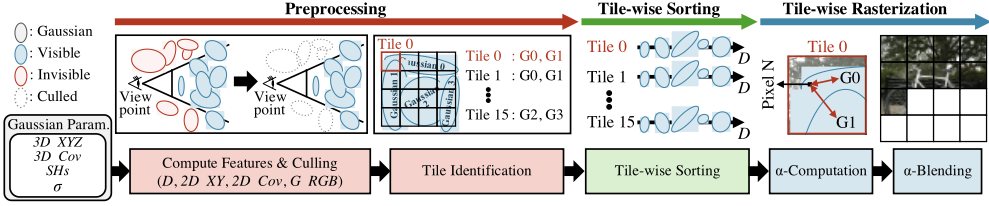
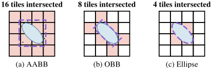
covariance matrix ( 3D_Cov ), opacity ( σ ), and spherical harmonics coefficients ( SHs ) representing color across different viewpoints are utilized. During this stage, features required for culling and subsequent operations, including depth ( D ), 2D coordinates ( 2D_XY ), 2D covariance ( 2D_Cov ), and Gaussian color ( G_RGB ), are computed. Concurrently, invisible Gaussians for the current viewpoint are identified and excluded from rendering computations through a culling process. As illustrated in Fig. 1, the initial input includes both visible (blue) and invisible (red) Gaussians, but through culling operations, only Gaussians visible to the viewpoint are used in subsequent computations. Tile identification step, which identifies the Gaussians affecting each tile, uses 2D_XY and 2D_Cov to determine the tiles influenced by each Gaussian. While theoretically, the influence range of a Gaussian is infinite, the 3-sigma rule is applied to define the Gaussian's size in [1]. In the tile-wise sorting stage , for each tile, the Gaussians identified during preprocessing are sorted in the order of proximity to the viewpoint by utilizing their depth values ( D ). Finally, in the tile-wise rasterization stage , the sorted sequence of Gaussians for each tile is utilized to compute pixel colors in the order of proximity to the current viewpoint. As shown in Fig.1, rasterization consists of two main steps. The first step, known as 𝛼 -computation, uses 2D_XY , 2D_Cov , and σ to calculate how much each Gaussian influences the color of the pixel being processed. Then, 𝛼 -computation for 𝑖 -th Gaussian is calculated using the following equation:
where 𝑃 means the pixel's coordinates, and 2𝐷_𝐶𝑜𝑣𝑖 -1 is the inverse of 𝑖 -th Gaussian's 2D covariance matrix. In [1], when 𝛼𝑖 is less than 1/255, 𝑖 -th Gaussian is considered to have no influence on the pixel color and is therefore excluded from the subsequent 𝛼 -blending computation. In 𝛼 -blending step, pixel colors are computed starting from the one closest to the viewpoint, using the following equation:
where 𝑁 is the number of visible Gaussian associated with the pixel. During the accumulation operation in (2), an early-exit is triggered if ∏ (1 - 𝛼𝑘 ) 𝑖-1 𝑘=1 falls below a predefined threshold (e.g., 10 -4 as suggested in [1]).
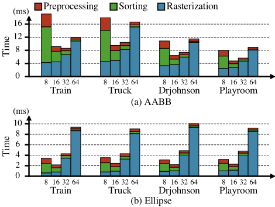
近期的研究进展，如 GSCore [7] 和 FlashGS [8]，通过引入能够精确识别受高斯影响的图块的技术，改进了 3D-GS 渲染。这些方法考虑了每个高斯的尺寸和形状，减少了逐图块排序和光栅化所需的高斯数量。图 2 展示了计算高斯影响范围的三种方法。图 2 (a) 给出了轴对齐包围盒（AABB）的示例，其中使用 AABB 时该高斯与 16 个图块相交。这种方法被原始 3D-GS 所采用，计算高效，但未能考虑高斯的形状，导致了大量不必要的计算。图 2 (b) 展示了有向包围盒（OBB）的使用，其中该高斯被识别为与 8 个图块相交。这种方法在 GSCore 中被采用，与 AABB 相比减少了不必要的图块识别，但计算开销相对较高。图 2 (c) 展示了基于椭圆的边界，其中该高斯仅与 4 个图块相交。这种方法被 FlashGS 所采用，最大限度地减少了不必要的图块选择，但由于直接处理椭圆形状而非矩形边界，其计算开销更大。然而，这些工作主要关注高斯的尺寸和形状，而未对图块尺寸在渲染流水线各阶段中的影响进行深入分析。在下一节中，我们将阐述图块尺寸在渲染流水线各阶段中的重要性。
在本节中，我们首先在不同图块尺寸下对 3D-GS 渲染流水线进行剖析。随后，分析图块尺寸对 3D-GS 渲染流水线各阶段的影响。
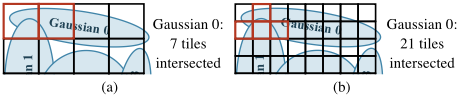
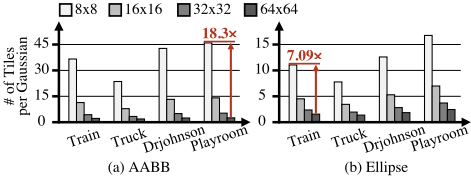
| % | 8 × 8 | 16 × 16 | 32 × 32 | 64 × 64 |
|---|---|---|---|---|
| Train | 94.4 | 89 | 79.7 | 66 |
| Truck | 89 | 79.2 | 64.7 | 47.7 |
| Drjohnson | 91.4 | 83.9 | 71.3 | 54 |
| Playroom | 91.3 | 83.8 | 71.7 | 54.7 |
| Average | 91.5 | 84 | 71.9 | 55.6 |
| % | 8 × 8 | 16 × 16 | 32 × 32 | 64 × 64 |
To analyze the rendering performance of 3D-GS with different tile sizes, profiling is conducted on the NVIDIA A6000. Fig. 3 presents the runtime breakdown across four scenes-Train, Truck, Drjohnson, and Playroom-using various tile sizes (8 × 8, 16 × 16, 32 × 32, and 64 × 64). The results are shown separately for AABB in Fig. 3(a) and ellipse boundary in Fig. 3(b). For the analysis, we use and modify the author-released codes from [1] and [8]. Detailed information on the scenes and pretrained models can be found in section VI-A. As shown in Fig. 3, the runtime for the preprocessing and sorting stages decreases with larger tile sizes, whereas the rasterization stage finishes more quickly with smaller tile sizes. Generally, a tile size of 16×16 provides the fastest rendering speed, though in some cases, 32×32 can also be faster. However, previous optimization algorithms for 3D-GS rendering have selected tile sizes based solely on empirical observations of rendering speed, without a comprehensive analysis of this underlying trade-off. In section III-B, we conduct an in-depth analysis of this trade-off to identify the opportunities for accelerating 3D-GS rendering.
预处理阶段。在预处理阶段，瓦片（tile）尺寸会影响“瓦片识别”（tile identification）步骤中的计算，该步骤用于识别每个高斯（Gaussian）所影响的瓦片。图 4 展示了 (a) 较大瓦片尺寸和 (b) 较小瓦片尺寸下瓦片识别过程的示例。如图所示，减小瓦片尺寸会增加同一图像区域内的瓦片数量，从而增加每个高斯在瓦片识别步骤中需要处理的瓦片数量。因此，随着瓦片尺寸的减小，预处理阶段的运行时间随之增加。
逐瓦片排序阶段。在图 4 (a) 中，高斯 0 与 7 个瓦片相交，并与高斯 1 共享其中的 2 个瓦片（以红色边框标出）。由于排序是以每个瓦片为单位进行的，高斯 0 需要进行 7 次排序操作，其中 2 次与高斯 1 的排序操作重复。在图 4 (b) 中，高斯 0 与 21 个瓦片相交，与高斯 1 共享 4 个瓦片，从而产生冗余的排序操作。这一结果是不可避免的，因为减小瓦片尺寸会增加同一图像尺寸内的瓦片数量。图 5 展示了在与图 3 相同的条件下每个高斯平均相交的瓦片数量。结果表明，随着瓦片尺寸的减小，每个高斯相交的瓦片数量呈指数级增长。对于 AABB 下的 playroom 场景，在 8 × 8 瓦片尺寸下，每个高斯平均相交的瓦片数量是 64 × 64 瓦片尺寸下的 18.3 倍。表 I 给出了不同瓦片尺寸下与相邻瓦片共享的高斯所占的百分比。值得注意的是，在 8 × 8 瓦片尺寸下，平均有 91.5% 的高斯与相邻瓦片共享。在逐瓦片排序阶段，我们的分析表明，在 3DGS 渲染中，随着瓦片尺寸的减小，每个瓦片的排序操作次数呈指数级增长，使得其中相当大一部分排序操作成为冗余。
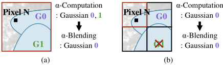
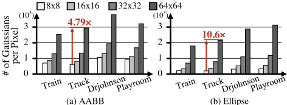
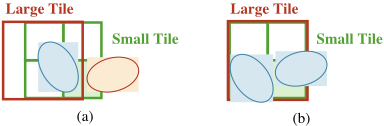
逐瓦片光栅化阶段。图6展示了光栅化的一个示例，其中(a)采用较大的瓦片尺寸，(b)采用较小的瓦片尺寸。在图6(a)中，包含Pixel N的瓦片与Gaussian 0和Gaussian 1均相交，从而需要针对这两个高斯对Pixel N执行光栅化操作。在这种情况下，Gaussian 0会影响Pixel N，因此既需要执行𝛼计算，也需要执行𝛼混合。然而，由于Gaussian 1并不影响Pixel N，仍会执行一次𝛼计算来确定其影响，并得出Gaussian 1不会对Pixel N产生影响的结论，从而将其排除在𝛼混合操作之外。而在图6(b)中，只有Gaussian 0与包含Pixel N的瓦片相交，因此与较大瓦片尺寸的情形不同，Gaussian 1无需执行𝛼计算。正如该示例所示，减小瓦片尺寸能够在预处理阶段更精细地识别高斯的影响，从而减少光栅化阶段中不必要的计算。图7展示了在与图3相同条件下每个像素平均需要处理的高斯数量。该图显示，在所有场景和边界中，随着瓦片尺寸的增大，每个像素所处理的高斯数量也随之增加，这表明瓦片尺寸越大，不必要的𝛼计算操作就越多。对于ellipse处的truck场景，采用64 × 64瓦片尺寸时，每个像素平均需要处理的高斯数量是采用8 × 8瓦片尺寸时的10.6倍。在逐瓦片光栅化操作中，我们的分析表明，较大的瓦片尺寸会导致不必要的光栅化计算增加。
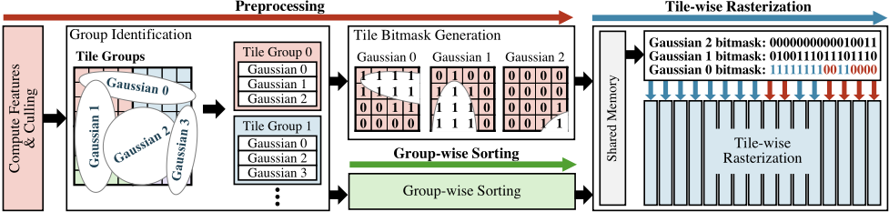
我们的分析表明，较大的瓦片可以减少预处理和排序的运行时间，而较小的瓦片则能提高光栅化效率。然而，要同时实现这两个目标存在两个挑战。首先，同时使用小瓦片和大瓦片需要在预处理阶段针对两种瓦片尺寸都执行瓦片识别操作，这会带来计算开销。其次，需要一种方法，能够将在较大瓦片尺寸下排序的数据用于较小瓦片尺寸的光栅化。为了应对这些挑战，我们提出了 GS-TG，这是一种基于瓦片分组的渲染流水线，它在保持光栅化效率的同时，通过减少冗余排序操作来提升 3D-GS 的渲染速度。
为了以最小的开销高效地应对这两个挑战，较小的瓦片应当完全包含于较大的瓦片之内。图 8 展示了两种场景：(a) 较小瓦片与较大瓦片未完全对齐的情况，以及 (b) 较小瓦片与较大瓦片完全对齐的情况。如图 8(a) 所示，当较小瓦片未与较大瓦片完全对齐时，某些高斯（例如图 8(a) 中的红色高斯）可能仅影响较小的瓦片，而不影响较大的瓦片。相比之下，如图 8(b) 所示，当较小瓦片与较大瓦片完全对齐时，所有影响较小瓦片的高斯也同时影响较大的瓦片。这样一来，当较小瓦片完全包含于较大瓦片之内时，便可确保较大瓦片的计算独立性。具体而言，一旦识别出影响较大瓦片的高斯，较大瓦片内部所有较小瓦片的渲染操作都可以仅使用这些高斯来完成。这种计算独立性提供了三个关键优势：1) 即使仅使用影响较大瓦片的高斯来渲染较小瓦片，也能保证结果无损。2) 识别影响较小瓦片的高斯的操作与针对较大瓦片的排序操作可以独立执行。3) 可以使用简单的位掩码（bitmask）来选取影响较小瓦片的高斯，从而无需庞大的索引开销。由此可见，确保较小瓦片完全包含于较大瓦片之内，能够有效解决上述挑战。因此，我们提出一种基于瓦片分组的渲染方法，将瓦片组当作较大的瓦片来对待。这确保了瓦片组（即较大的瓦片）的计算独立性。
图 9 展示了基于瓦片分组的渲染的整体流水线。首先，特征计算和剔除操作的执行方式与常规 3D-GS 渲染类似。
组识别步骤。基于预定义的组大小对瓦片进行分组，并识别影响每个组的高斯。该步骤类似于传统 3DGS 渲染中的瓦片识别步骤，但在组级别上运行，而组级别对应于较大的瓦片。例如，在图 9 中，16 个小瓦片被分组在一起，并确定影响每个组的高斯。通过对瓦片进行分组，我们确保一个组内的所有小瓦片仅受与该组相关联的高斯的影响。这种关系使得能够按组进行排序并同时生成位掩码，从而确定哪些高斯影响组内的特定瓦片。在小瓦片级别识别高斯影响的运行时开销被这些并行操作有效地隐藏了。此外，组级别排序通过最小化重复的排序操作，显著减轻了冗余的计算开销，而这类重复排序操作在小组级别排序方法中原本是固有的。
位掩码生成步骤。一旦完成组识别，便生成位掩码以实现逐瓦片光栅化。对于每个高斯，使用一个 16 位位掩码来指示组内的哪些瓦片受到影响。例如，在图 9 中，为组 0 中的高斯创建位掩码，以识别 16 个小瓦片中的哪些受到影响。如果某个瓦片受到该高斯的影响，则在位掩码中将其标记为"1"。由于组内瓦片仅受相应高斯影响这一确定性关系，16 位位掩码能够高效地编码这些影响，从而同时优化了内存表示和计算复杂度。这种紧凑的编码显著降低了在更小瓦片尺寸下管理高斯-瓦片关系所带来的开销。
逐瓦片光栅化步骤。利用按组排序的数据和已生成的位掩码，在更小的瓦片级别上执行光栅化。这通过将光栅化限制在位掩码中显式标记的瓦片上，最大限度地减少了不必要的 𝛼 计算。
在组识别和瓦片位掩码生成过程中计算高斯影响时，可以采用以下任意一种技术：轴对齐包围盒（AABB）、有向包围盒（OBB）或椭圆边界。图 9 展示了应用椭圆技术的一个示例。
所提出的 GS-TG 技术旨在同时执行位掩码生成和按组排序。因此，它能够在大型瓦片组级别上进行预处理和排序，而光栅化则在小型瓦片级别上进行。然而，GPU 的单指令多线程（SIMT）架构在并行执行位掩码生成和按组排序方面存在局限。因此，在预处理阶段，要隐藏与高斯对小型瓦片影响相关的计算执行时间变得颇具挑战。为了克服这些局限，设计了一种专用硬件架构，以高效支持所提出的渲染流水线。
图 10 展示了 GS-TG 的整体硬件架构及关键框图。该架构由两个主要模块组成：预处理模块（PM）和 GS-TG 核心模块（GS-TG Core），两者均以四个并行实例实现，以支持高效处理。PM 在保持与传统 3D-GS 渲染中预处理阶段相同结构的同时，执行高斯特征计算、剔除和分组识别操作。经过剔除处理的高斯特征被传递给 GS-TG Core，用于 GS-TG 渲染流水线的后续阶段。GS-TG Core 由三个主要硬件模块组成：位掩码生成模块（BGM）、按组排序模块（GSM）和光栅化模块（RM）。BGM。该模块利用不透明度（σ）、投影二维坐标（2D_XY）和协方差（2D_Cov）数据，确定受每个高斯影响的瓦片。四个瓦片检查单元并行工作，生成 16 位的瓦片位掩码（Tile_Bitmask），并将其发送给 RM。GSM。该模块利用每个高斯的深度信息（D）执行快速排序。排序单元配备 16 个比较器，可实现高速排序。排序后的高斯索引（Sorted_G_Idx）被转发给 RM。RM。该模块是高效处理基于瓦片渲染的核心，执行以下关键操作：1）利用 16 位的 Tile_Bitmask 和 16 位的 Tile_Location，执行按位与（bitwise AND）运算，以筛选出影响特定瓦片的高斯。同时执行按位或（bitwise OR）运算以生成有效标志，用于指示某个高斯是否影响当前瓦片。该过程并行处理八个高斯。2）针对特定瓦片识别出的高斯索引被存储在先进先出（FIFO）缓冲区中，以维持渲染顺序，随后被传输到各瓦片专用的光栅化子模块。逐瓦片光栅化模块由 16 个并行的光栅化单元（RU）组成。每个 RU 执行 𝛼 计算和 𝛼 混合以计算最终像素颜色，随后将其输出到存储器。
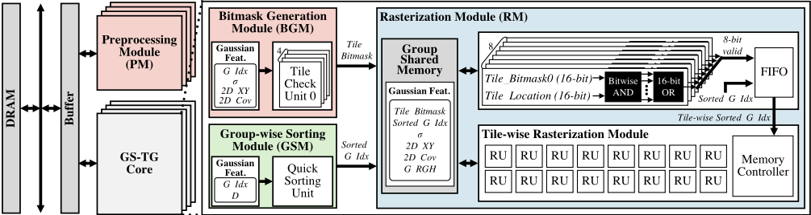
这确保了所有阶段之间无缝且高效的并行处理，从而最大化 GS-TG 渲染流水线的性能。
算法。如第 V-A 节所述，由于图形处理器（GPU）采用单指令多线程（SIMT）架构，难以并行地同时执行位掩码生成和分组排序。因此，GS-TG 被设计为按以下顺序依次运行：分组识别、瓦片位掩码生成、分组排序和逐瓦片光栅化——无论是否在 GPU 上运行。GS-TG 通过使用 CUDA 编程修改 [8] 中作者发布的代码来实现。实验在 NVIDIA A6000 GPU 上进行，代码使用 GCC 11.4.0 和 CUDA 11.6 中的 NVCC 编译。
硬件。所提出的 GS-TG 架构以寄存器传输级（RTL）实现，并使用 Synopsys Design Compiler 基于 28nm CMOS 工艺进行综合。功耗和能耗使用 Synopsys PrimeTime PX 进行仿真，速度提升通过周期级仿真器进行评估。动态随机存取存储器（DRAM）带宽设置为 51.2 GB/s，DRAM 能耗基于 [16] 计算。
通用细节。表 II 给出了用于评估的数据集的分辨率和类型。从 Tanks&Temples [9]、Deep Blending [10]、Mill-19 [14] 和 UrbanScene3D [15] 数据集中，选取了代表室内和室外真实环境的多种场景：train、truck、Drjohnson、playroom、rubble 和 residence。仿真使用预训练的 3D-GS30k 模型进行。此外，为提高 GS-TG 的吞吐量和面积效率，以 32 位浮点格式训练的模型被转换为 16 位浮点格式。遵循 MipNeRF360 中提出的方法，对所有数据集应用训练/测试划分。对于 T&T 和 DB 数据集，每第 8 张图像用于测试。在 Mill-19
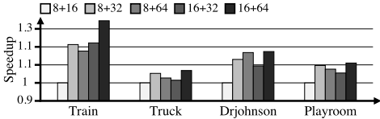
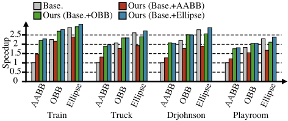
| Dataset | Scene | Resolution | Type |
|---|---|---|---|
| Tanks&Temples [9] | Train Truck | 1959 × 1090 1957 × 1091 | Outdoor |
| Deep Blending [10] | Drjohnson Playroom | 1332 × 876 1264 × 832 | Indoor |
| Mill-19 [14] | Rubble | 4608 × 3456 | Outdoor |
| UrbanScene3D [15] | Residence | 5472 × 3648 | Outdoor |
| Dataset | Scene | Resolution | Type |
数据集中，每第 64 张图像用于测试，而在 UrbanScene3D 数据集中，每第 128 张图像用于测试。
我们首先通过考虑位掩码生成与组级排序的并行操作，评估了不同瓦片尺寸和组尺寸下的性能。图 11 展示了四个场景（train、truck、Drjohnson、playroom）上的归一化加速比。在图 11 中，“8+16” 表示瓦片尺寸为 8 × 8、组尺寸为 16 × 16，即每个组由 4 个瓦片组成。根据我们的分析，16+64 的组合在大多数情况下取得了最快的性能。因此，后续针对所提出的 GS-TG 的实验均采用 16 × 16 的瓦片尺寸和 64 × 64 的组尺寸进行。
我们评估了在 GPU 上运行的 GS-TG 的加速比。图 12 展示了在四个场景（train、truck、Drjohnson 和 playroom）上取得的性能提升。x 轴标签中的轴对齐包围盒（AABB）、有向包围盒（OBB）和 Ellipse 表示基线的瓦片识别步骤中用于计算高斯影响范围的边界方法。加速比结果以应用 AABB 的基线情形为基准进行归一化。图中，“ours” 表示将 x 轴所示的边界方法应用于组识别步骤而非基线的瓦片识别步骤的情形。红色、绿色和蓝色分别表示在 GS-TG 的位掩码生成步骤中应用 AABB、OBB 和 Ellipse 边界方法的情形。例如，AABB 对应的绿色柱表示在组识别步骤中使用 AABB、而在位掩码生成步骤中应用 OBB 的情形。从图 12 中可以观察到三个关键发现：1) 在 GS-TG 中使用 Ellipse+Ellipse 组合时，性能超越了所有基线。2) 当基线与 GS-TG 应用相同的边界时，GS-TG 始终能实现更快的速度。例如，采用 OBB+OBB 的 GS-TG 优于使用 OBB 的基线。3) 所提出的基于瓦片分组的渲染技术展现出与各种边界方法的灵活兼容性。
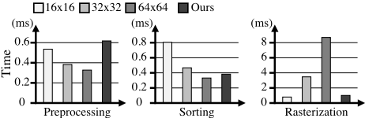
图 13 展示了 train 场景中渲染流水线三个阶段（预处理、排序和光栅化）的各阶段运行时间分解。该图将使用 Ellipse 边界方法且瓦片大小分别为 16 × 16、32 × 32 和 64 × 64 的基线，与采用 Ellipse+Ellipse 边界的所提出的 GS-TG 进行了比较。如图所示，所提出的 GS-TG 在排序阶段通过将 16 × 16 的瓦片分组为 16 个组，实现了与 64 × 64 瓦片大小相当的排序性能，同时保持了与 16 × 16 瓦片大小等效的光栅化性能。然而，当 GS-TG 在 GPU 上运行时，位掩码生成操作在运行时无法与排序操作重叠，导致预处理阶段慢于基线。该问题已通过专用的 GS-TG 加速器得到解决，使位掩码生成与组排序能够并行执行，从而进一步提升了整体性能。
表 III 展示了 GS-TG 各模块的综合结果。GS-TG 的总面积为 3.984 𝑚𝑚²，功耗为 1.063 𝑊，工作频率为 1 GHz。据我们所知，目前唯一与三维高斯泼溅（3D-GS）渲染相关的现有硬件是 GSCore [7]。因此，我们将基线设置为在所提出的加速器上运行的采用椭圆（Ellipse）边界的传统 3D-GS 渲染，并将 GS-TG 的性能与 GSCore 进行了比较。图 14 展示了与基线和 GSCore 相比，GS-TG 在六个不同场景上所取得的加速比。GS-TG 相比基线取得了 1.33 倍的几何平均加速比，其中在高分辨率 Residence 场景中最大加速比达 1.58 倍。此外，在 Residence 场景中，GS-TG 的性能最高可达 GSCore 的 1.54 倍。图 15 展示了在六个不同场景中，GS-TG 相比于基线和 GSCore 所取得的能效。GS-TG 相比基线取得了 2.12 倍的几何平均能效提升，其中在高分辨率 Residence 场景中观察到最大提升为 2.97 倍。这一卓越的性能归因于针对基于瓦片分组的渲染流水线而优化的专用架构。
本文深入研究了瓦片尺寸对三维高斯泼溅（3D-GS）渲染流水线的影响，并识别出了关键瓶颈。为应对这些挑战，我们提出了 GS-TG，一种基于瓦片分组的渲染方法，该方法
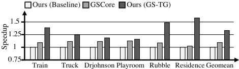
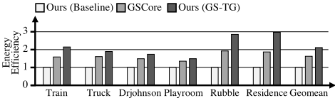
| Module | Module | Configuration | Area [ 𝑚𝑚 2 ] | Power [ 𝑊 ] |
|---|---|---|---|---|
| PM | PM | 4 | 0.648 | 0.429 |
| BGM | 4 | 0.051 | 0.055 | |
| GS-TG Core GSM | 4 | 0.012 | 0.001 | |
| RM | 4 | 1.891 | 0.338 | |
| Buffer | Buffer | 4×2×42KB | 1.382 | 0.240 |
| Total | Total | Total | 3.984 | 1.063 |
| Operating Freq. | Operating Freq. | Operating Freq. | 1GHz | 1GHz |
| Module | Module | Configuration | Area [ 𝑚𝑚 2 ] | Power [ 𝑊 ] |
通过减少冗余排序操作并优化光栅化效率，显著提升了 3D-GS 渲染的速度。GS-TG 是一种无损方法，无需重新训练或微调，并可与现有的 3D-GS 优化技术无缝集成。实验结果表明，GS-TG 的性能始终优于最先进的 3D-GS 硬件，实现了高达 1.54 倍的加速。这项工作凸显了在 3D-GS 渲染中进一步开展软硬件协同设计优化的潜力。